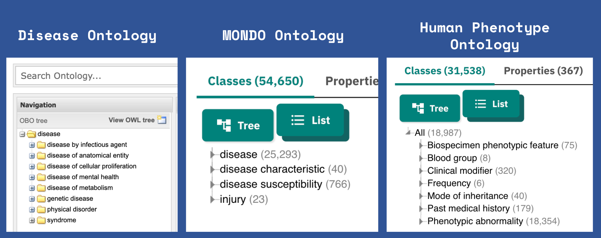
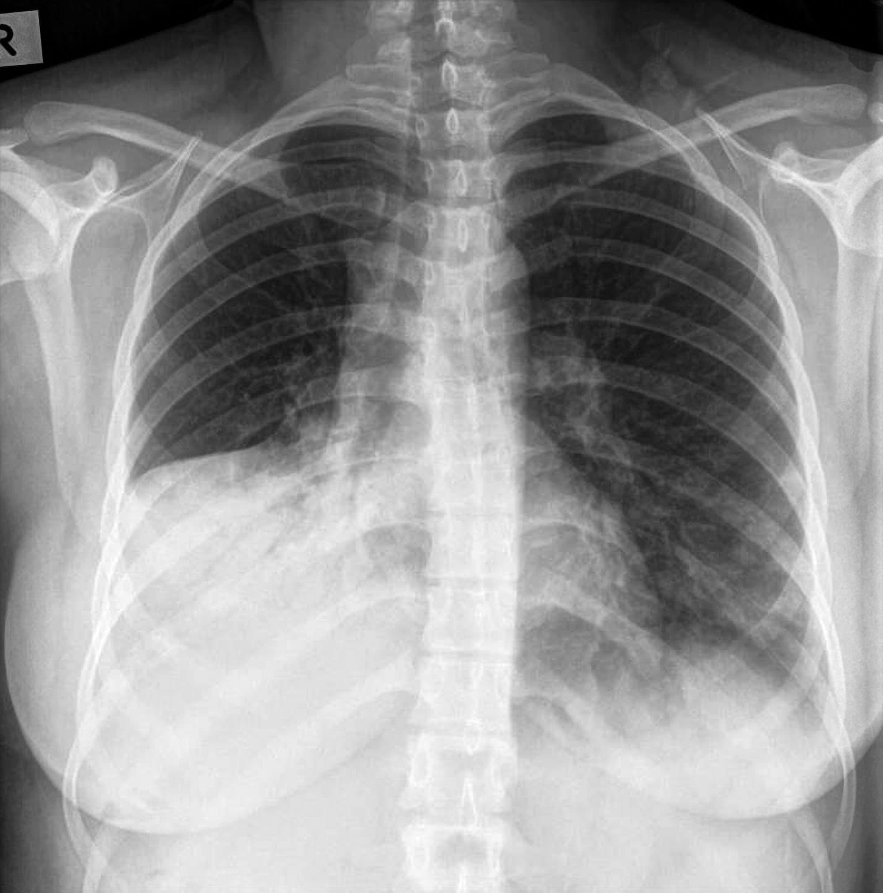

This is my best attempt at a catchy name that mimics the concept of triplestores used in ontologies into plain language (English), because I realize LLM work at a many-to-many mapping possible, but it understands the rules of language the best.
For those unfamiliar “triple store” is a general description to store “triples” (https://en.wikipedia.org/wiki/Semantic_triple) often used in knowledge representation, particularly used with ontologies and semantic web. If you are unfamiliar with RDF/XML, OWL, Turtle, SPARQL and never wanted to approach them, this might be a solution for you in at least leveraging ontologies.
Consider this an attempt to reimagine the concept of triplestores for the LLM era. While traditional triplestores store knowledge in rigid [subject]-[predicate]-[object] formats, unoriginally named SentenceSTORE uses natural language sentences as its fundamental unit of storage.
Terminology code mapping task has a hallucination problem
It’s well known to the healthcare world that chatbots are terrible for medical coding tasks. Personally, I totally get it, given the tokenization techniques, it’s tough to make sense of these alphanumeric patterns from the standpoint of LLM training.
Example, recent NEJM (New Englang Journal of Medicine) AI article: https://ai.nejm.org/doi/full/10.1056/AIdbp2300040
Gemini Pro 1.5 Base Model: Poor
I’ve tested the Gemini Pro 1.5, and generally it’s in line with the NEJM paper. Medical terminology extraction / medical coding is not a native LLM job.
But overall, ontologies have a lot of accrued, carefully curated knowledge that most people are open-access to.
Ontology Basics
Intro to Owlready2
Let me demonstrate why ontologies are hard to use. Using one of the easier (maybe only) libraries in python that allows us to access data in an ontology, and note that this is very rudimentary exploration of ontologies.
We will be using one of the few native-python libraries for dealing with ontologies to extract the triple stores in the OWL files we will be using, owlready2 - https://owlready2.readthedocs.io/en/latest/
Step 1: Install owlready2
pip install owlready2
Step 2: Download OWL files
Human Phenotype Ontology (https://hpo.jax.org/): [.owl File]
Mondo Disease Ontology (https://mondo.monarchinitiative.org/) [.owl File]
Step 3: Follow along if you wish to get an intro to ontologies
Querying Ontologies
!pip install owlready2
Requirement already satisfied: owlready2 in /Users/jung/.pyenv/versions/3.12.6/envs/llm-3.12.6/lib/python3.12/site-packages (0.46)
[notice] A new release of pip is available: 24.2 -> 24.3.1
[notice] To update, run: pip install --upgrade pip
Note duplication - happens with multiple ontologies referencing same entity (HPO and MONDO has some duplications) and Owlready2’s implementation.
Not a big deal for us, since we’ll just use the unique relationships.
[x.label for x in entity.ancestors()]
[['hematopoietic and lymphoid cell neoplasm'],
[locstr('specifically dependent continuant', 'en')],
['cancer or benign tumor'],
['leukemia'],
['human disease'],
['disease'],
['hematopoietic and lymphoid system neoplasm'],
[locstr('entity', 'en')],
['neoplastic disease or syndrome'],
[locstr('realizable entity', 'en')],
[locstr('continuant', 'en')],
['neoplasm'],
[locstr('disposition', 'en')],
[],
['hematologic disorder']]
Get “child” concept of an entity
[x.label for x in entity.descendants()][0:10]
[['chronic erythremia'],
['acute myelomonocytic leukemia M4'],
['acute myeloid leukemia, t(10;11)(p11.2;q23)'],
['hairy cell leukemia'],
['leukemia'],
['mixed phenotype acute leukemia with MLL rearranged'],
['acute myeloid leukemia, t(9;11)(p21.3;q23.3)'],
['acute myeloid leukemia, KIT exon 17 mutation'],
['therapy related acute myeloid leukemia and myelodysplastic syndrome'],
['acute myeloid leukemia, loss of chromosome 17p']]
Creating SentenceSTORE
Note that my goal is to recreate the knowledge stored in this ontology, by writing out the concepts above in plain English. I know this is what LLMs understand, so given the generous token length provided, I figured this is possible.
“Cardiomyopathy is a phenotypic abnormality.”
“Histiocytoid cardiomyopathy is a cardiomyopathy.”
These functions below basically do this task, grouping concepts for dealing with token length limits.
GOAL: - Take file path of the OWL files and optional predicate string override. - Turn [A]-(descendant)-[B] into “A is a B” - But allow Owlready2’s method names to be replaced with something that LLMs would recognize - My hunch was that “A descendant B” is not as definitive as “A is a B” for the sake of LLMs - it infers grammar / logic pretty well.
# This code itself was iteratively generated via LLM chabot, so bear with the uglinessdef get_dbxref_relationships(entity):""" Get direct DbXref relationships for an entity. Args: entity: The ontology entity to process Returns: list: List of DbXref relationships """ relationships = [] entity_label = entity.label[0] ifhasattr(entity, 'label') and entity.label else entity.name# TODO This is ugly but was trial-and-error, someone rewrite it.# For the time being just wanted to focus on UMLS, SNOMECT, ICD10CMifhasattr(entity, 'hasDbXref') and entity.hasDbXref: codes_as_string =", ".join([ code.replace(":", ' ') .replace('_2023_03_01', '') # Some SNOMED codes have this suffix .replace('_CUI', '') # UMLS is prefixed as UMLS_CUI, feel unnecessaryfor code in entity.hasDbXref if code andisinstance(code, str) andany(code.startswith(prefix) for prefix in ['UMLS', 'SNOMEDCT', 'ICD10CM']) ])if codes_as_string!="": relationships.append(f"{entity_label.lower()} can be coded with {codes_as_string}")return relationshipsdef get_entity_relationships(entity, relationship_map):""" Get unique direct relationships for an entity based on defined relationship mappings. Excludes self-referential relationships. Args: entity: The ontology entity to process relationship_map: Dict mapping method names to relationship phrases e.g. {"descendants": "is a", "parts": "is part of"} Returns: list: List of unique direct relationships """ relationships =set()# Handle different label types including locstrdef get_label(e):ifhasattr(e, 'label') and e.label:# locstr objects can be used directly as stringsreturnstr(e.label[0])return e.name entity_label = get_label(entity)# Iterate through each relationship type defined in the mappingfor method_name, relationship_phrase in relationship_map.items():# Get the method if it exists on the entity relation_method =getattr(entity, method_name, None)if relation_method andcallable(relation_method):# Get related entities using the method related_entities = relation_method()# Handle both iterator and list returnsifnotisinstance(related_entities, (list, set)): related_entities =list(related_entities)for related in related_entities: rel_label = get_label(related)# Skip if the labels are identical (self-reference)# Don't want "Diabetes is diabetes"if rel_label != entity_label: relationships.add(f"{rel_label.lower()}{relationship_phrase}{entity_label.lower()}") dbxrefs = []# Get DbXref relationships (for entity and all descendants) visited =set()def process_dbxrefs(current_entity):if current_entity notin visited: visited.add(current_entity) dbxrefs.extend(get_dbxref_relationships(current_entity))for descendant in current_entity.descendants(): process_dbxrefs(descendant)return dbxrefs cross_reference_relationships =set(process_dbxrefs(entity)) relationships = relationships.union(cross_reference_relationships)returnlist(relationships)
Have to make sure the entities get written out as english language sentence.
# Key: method name for owlready2# Value: what string to use for defining the relationship (DTR) RELATIONSHIP_MAP = {"subclasses": "is a","parts": "is part of","connected_to": "connects to","located_in": "is located in"}get_entity_relationships(entity, relationship_map=RELATIONSHIP_MAP)
['neonatal insulin-dependent diabetes mellitus can be coded with UMLS C3278636',
'maturity-onset diabetes of the young can be coded with SNOMEDCT_US 609561005, UMLS C0342276',
'type i diabetes mellitus is a diabetes mellitus',
'insulin-dependent but ketosis-resistant diabetes can be coded with UMLS C1842404',
'type i diabetes mellitus can be coded with SNOMEDCT_US 46635009, UMLS C0011854',
'diabetic ketoacidosis can be coded with SNOMEDCT_US 420422005, UMLS C0011880',
'insulin-resistant diabetes mellitus at puberty can be coded with UMLS C1837792',
'transient neonatal diabetes mellitus can be coded with SNOMEDCT_US 237603002, UMLS C0342273',
'type ii diabetes mellitus can be coded with SNOMEDCT_US 44054006, UMLS C0011860',
'maturity-onset diabetes of the young is a diabetes mellitus',
'diabetes mellitus can be coded with SNOMEDCT_US 73211009, UMLS C0011849',
'insulin-resistant diabetes mellitus can be coded with UMLS C0854110',
'insulin-resistant diabetes mellitus is a diabetes mellitus',
'diabetic ketoacidosis is a diabetes mellitus',
'type ii diabetes mellitus is a diabetes mellitus']
SentenceSTORE is READY!
image.png
Systematically process the ontologies
Since the single entity extracton work, we need to use the processing function to extract the whole thing.
For each ontology there are a handful of “top-level” entities that need to be selected. For example:

image.png
Since all ontologies have a hierachical structure, using the top level concept, traversing it down literatively with children concepts, we can cover all the ontology entities.
Ontology (.owl) to SentenceSTORE Converter
def process_ontology_relationships(ontology_path, top_level_labels=None, relationship_map=None):""" Process ontology relationships recursively starting from specified top-level entities. Returns sorted unique relationships across all specified entities and their subclasses. Args: ontology_path: str, Path to the ontology file top_level_labels: list[str], Labels of top-level entries to process. If None, an empty list will be returned relationship_map: Optional[dict], Mapping of method names to relationship phrases Returns: list: Sorted unique relationships found across specified top-level entities and their subclasses """# Default relationship mapping DEFAULT_RELATIONSHIP_MAP = {"subclasses": "is a","parts": "is part of","connected_to": "connects to","located_in": "is located in" }from owlready2 import get_ontology, get_namespace# Load ontology onto = get_ontology(ontology_path).load() obo = get_namespace("http://purl.obolibrary.org/obo/")# Use provided or default relationship map relationship_map = relationship_map or DEFAULT_RELATIONSHIP_MAPifnot top_level_labels:return []print("\nProcessing relationships:")print("-"*40)def process_entity_and_subclasses(entity, processed_entities=None):""" Recursively process an entity and all its subclasses. Args: entity: The entity to process processed_entities: Set of already processed entities to avoid cycles Returns: list: All relationships found for this entity and its subclasses """if processed_entities isNone: processed_entities =set()if entity in processed_entities:return [] processed_entities.add(entity)# Get relationships for current entity relationships = get_entity_relationships(entity, relationship_map)# Process all subclassesfor subclass in entity.descendants():if subclass notin processed_entities: sub_relationships = process_entity_and_subclasses(subclass, processed_entities) relationships.extend(sub_relationships)return relationships# Find and process top-level entities all_relationships = [] processed_entities =set()for label in top_level_labels: search_results = onto.search(label=label)if search_results: top_entity = search_results[0] relationships = process_entity_and_subclasses(top_entity, processed_entities) all_relationships.extend(relationships)print(f"{label}: {len(relationships)} relationships found")# Remove duplicates and sort unique_relationships =sorted(list(set(all_relationships)))print("-"*40)print(f"Total unique relationships: {len(unique_relationships)}\n")return unique_relationships
1. HPO
I iteratively cherry picked these for performance, as Kaggle gives me trouble. Personal notebook works.
Processing relationships:
----------------------------------------
Clinical modifier: 571 relationships found
Phenotypic abnormality: 155221 relationships found
----------------------------------------
Total unique relationships: 34581
2. MONDO
relationships_from_mondo = process_ontology_relationships( ontology_path="ontologies/mondo.owl", top_level_labels=[# "disease","human disease", # "disease characteristic",# "disease susceptibility", # Has long names"injury" ],)
Processing relationships:
----------------------------------------
human disease: 281182 relationships found
injury: 23 relationships found
----------------------------------------
Total unique relationships: 55138
3. Disease Ontology
relationships_from_do = process_ontology_relationships( ontology_path="ontologies/doid-merged.owl", top_level_labels=["disease by infectious agent","disease of anatomical entity","disease of cellular proliferation",# "disease of mental health","disease of metabolism",# "genetic disease","physical disorder","syndrome" ],)
Processing relationships:
----------------------------------------
disease by infectious agent: 2272 relationships found
disease of anatomical entity: 53917 relationships found
disease of cellular proliferation: 10565 relationships found
disease of metabolism: 2902 relationships found
physical disorder: 382 relationships found
syndrome: 2023 relationships found
----------------------------------------
Total unique relationships: 19803
[Option Utility]: Polars search function
Just to make string search easier
import polars as plfrom typing import Union, Pattern, List# All ontology search# These are just for sanity checking proper processing.df = pl.from_dict({"text_relationships": list(set( relationships_from_hpo + relationships_from_do + relationships_from_mondo ))})hpo_df = pl.from_dict({"text_relationships": list(set( relationships_from_hpo ))})mondo_df = pl.from_dict({"text_relationships": list(set( relationships_from_mondo ))})do_df = pl.from_dict({"text_relationships": list(set( relationships_from_do ))})@pl.api.register_dataframe_namespace("regex")class RegexFrame:def__init__(self, df: pl.DataFrame) -> List:self._df = dfdef search(self, pattern: Union[str, Pattern], column: str) -> List[str]:"""Search column using regex pattern. Returns sorted list of matching strings."""ifisinstance(pattern, str): search_pat = patternelse: search_pat = pattern.patternreturnsorted(self._df.filter( pl.col(column).str.contains(search_pat) ).select(column).to_series().to_list())
['2-3 finger cutaneous syndactyly can be coded with SNOMEDCT_US 205139009, UMLS C0432055',
'2-3 toe cutaneous syndactyly can be coded with SNOMEDCT_US 205145001, UMLS C0432040',
'2-3 toe syndactyly can be coded with SNOMEDCT_US 205145001, UMLS C0432040',
'3-m syndrome can be coded with SNOMEDCT_US 702342007, UMLS C1848862, UMLS C3280146',
'3-methylglutaconic aciduria can be coded with SNOMEDCT_US 237950009, UMLS C3696376',
'4-layered lissencephaly can be coded with SNOMEDCT_US 253147000, UMLS C0431375',
'aagenaes syndrome can be coded with SNOMEDCT_US 28724005, UMLS C0268314',
'abdominal aortic aneurysm can be coded with SNOMEDCT_US 155422008, UMLS C0162871',
'abdominal colic can be coded with SNOMEDCT_US 9991008, UMLS C0232488',
'abdominal distention can be coded with SNOMEDCT_US 41931001, SNOMEDCT_US 60728008, UMLS C0000731']
# Not a pure function but good for quick checkdef get_ontology_counts(search_term):print(f'{search_term} in Combined: {(len(df.regex.search(search_term, column="text_relationships")))}')print("-"*30)print(f'{search_term} in HPO: {(len(hpo_df.regex.search(search_term, column="text_relationships")))}')print(f'{search_term} in MONDO: {(len(mondo_df.regex.search(search_term, column="text_relationships")))}')print(f'{search_term} in DO: {(len(do_df.regex.search(search_term, column="text_relationships")))}')
get_ontology_counts("SNOMED")
SNOMED in Combined: 8033
------------------------------
SNOMED in HPO: 3448
SNOMED in MONDO: 0
SNOMED in DO: 4645
✅ ICD10 coded?
get_ontology_counts("ICD10")
ICD10 in Combined: 4996
------------------------------
ICD10 in HPO: 0
ICD10 in MONDO: 1637
ICD10 in DO: 3365
✅ UMLS coded?
get_ontology_counts("UMLS")
UMLS in Combined: 37201
------------------------------
UMLS in HPO: 11467
UMLS in MONDO: 20642
UMLS in DO: 6166
['1-2 finger cutaneous syndactyly can be coded with UMLS C4023732',
'1-2 toe complete cutaneous syndactyly can be coded with UMLS C4025140',
'1-2 toe syndactyly can be coded with UMLS C4023726',
'1-3 finger cutaneous syndactyly can be coded with UMLS C4023730',
'1-3 toe syndactyly can be coded with UMLS C4025774']
['anterior spinal artery stroke can be coded with UMLS C2931608',
'anterior spinal artery stroke is a arterial disorder',
'anterior spinal artery stroke is a spinal cord ischemia',
'autosomal recessive leukoencephalopathy-ischemic stroke-retinitis pigmentosa syndrome can be coded with UMLS C4749919',
'autosomal recessive leukoencephalopathy-ischemic stroke-retinitis pigmentosa syndrome is a hereditary disease',
'autosomal recessive leukoencephalopathy-ischemic stroke-retinitis pigmentosa syndrome is a syndromic disease',
'cathepsin a-related arteriopathy-strokes-leukoencephalopathy can be coded with ICD10CM I67.8, UMLS C5680354',
'cathepsin a-related arteriopathy-strokes-leukoencephalopathy is a cerebrovascular disorder',
'cathepsin a-related arteriopathy-strokes-leukoencephalopathy is a hereditary neurological disease',
'ischemic stroke can be coded with SNOMEDCT_US 422504002, UMLS C0948008']
['moyamoya disease 5 can be coded with UMLS C3279690',
'moyamoya disease 5 is a moyamoya disease',
'moyamoya disease 7 can be coded with UMLS C5882748',
'moyamoya disease 7 is a moyamoya disease',
'moyamoya disease can be coded with ICD10CM I67.5, SNOMEDCT_US 69116000, UMLS C0026654',
'moyamoya disease can be coded with UMLS C0026654',
'moyamoya disease is a cerebral arterial disease',
'moyamoya disease is a hereditary neurological disease',
'moyamoya disease with early-onset achalasia can be coded with UMLS C3810403',
'moyamoya disease with early-onset achalasia is a digestive system disorder']
Token Number Rough check
Note these are underestimates, since it just counts spaces.
⚠️ KAGGLE Seems to have trouble running PROMPTS >500k tokens (?) IT APPEARS
I am resorting to single-ontology mapping.
Generally, the multiple ontology approach prevents code hallucination, but I’ll switch between HPO and Disease Ontology because of the limitations of Kaggle Notebooks.
# If you need to clear the cache completely:def clear_cache():for c in caching.CachedContent.list(): c.delete()clear_cache()
for c in caching.CachedContent.list():print(c)
APPLICATION: Structured Consultation Reports
The Prompt
Parse any content clinical information, digest it and encode it with standard terminology codes.
BASE_INSTRUCTIONS ="""Generate structured consultation reports from clinical inputs. Use these status indicators when appropriate:NEGATION (use both): ❌ finding + "no/absent/without [term]"SEVERITY: 🔴 severe/critical 🟡 moderate/concerning 🟢 mild/stableINPUT CLASSIFICATION:- Clearly state source type: Patient text or question, clinical text, radiology image, pathology image, or photo of a lesion, etc.REPORT FORMAT:### Source[One line describing input type and key context]### Impression[2-3 lines maximum capturing key findings/diagnosis]### Supporting Evidence- Primary findings, each with: - Cached ontology and knowledge base mapping - Only from cached ontology, find codes from terminologies SNOMEDCT_US, ICD10CM, and/or UMLS when present in the cached ontology: Format as `code`. - Supporting details from input- Add Markdown table for identified concepts STRING | TERMINOLOGY | CODE### Relevant Relationships- Key ontological associations: - Direct phenotype/disease links - Inheritance patterns if applicable - System-level relationshipsFORMAT RULES:- Use `backticks` for ontology terms- **Bold** for key matches/findings- Group related findings- Brief, evidence-based statements- Hyperlink SNOMEDCT_US code as: [REPLACE WITH CODE](https://browser.ihtsdotools.org/?perspective=full&conceptId1=[REPLACE WITH CODE]&edition=MAIN/SNOMEDCT-US/2024-09-01&release=&languages=en)- Hyperlink UMLS code as: [REPLACE WITH CODE](https://uts.nlm.nih.gov/uts/umls/searchResults?searchString=[REPLACE WITH CODE]) # """# cache_hpo = caching.CachedContent.create(# model="models/gemini-1.5-pro-002",# display_name='Human Phenotype Ontology',# ttl=60*60,# system_instruction=f"""You are a clinical consultation system that analyzes inputs and provides structured reports# using ontology-backed reasoning. Use only cached relationships for interpretations.# Core Functions:# - Input classification# - Key finding identification# - Ontology-based reasoning# - Evidence structuring# {BASE_INSTRUCTIONS}# """,# contents=". ".join(# list(# set(# relationships_from_hpo# )# )# )# )cache_all = caching.CachedContent.create( model="models/gemini-1.5-pro-002", display_name='HPO + DO', ttl=60*60, system_instruction=f"""You are a clinical consultation system that analyzes inputs and provides structured reports using ontology-backed reasoning. Use only cached relationships for interpretations. Core Functions: - Input classification - Key finding identification - Ontology-based reasoning - Evidence structuring{BASE_INSTRUCTIONS} """, contents=". ".join(list(set( relationships_from_hpo+ relationships_from_do ) ) ))# cache_do = caching.CachedContent.create(# model="models/gemini-1.5-pro-002",# display_name='Disese Ontology',# ttl=60*60*2,# system_instruction=f"""You are a clinical consultation system that analyzes inputs and provides structured reports# using ontology-backed reasoning. Use only cached relationships for interpretations.# Core Functions:# - Input classification# - Key finding identification# - Ontology-based reasoning# - Evidence structuring# {BASE_INSTRUCTIONS}# """,# contents=". ".join(# list(# set(# relationships_from_do# )# )# )# )
Markdown Output Displayer
from IPython.display import display, Markdowndef render_markdown(markdown_text): display(Markdown(markdown_text))
🎯 Patient Chief Complaint
user_input ="""My belly hurts 10/10 sharp pain."""model_cached = genai.GenerativeModel.from_cached_content(cached_content=cache_all)ontology_response = model_cached.generate_content(f"""Using ONLY the cached ontology relationships, provide a structured analysis report for the following input: {user_input} """, request_options={"timeout": 600})render_markdown(f"{ontology_response.text}")
Source
Patient text describing severe abdominal pain.
Impression
❌ Appendicitis: Patient denies fever, nausea, or vomiting. 🔴 Severe abdominal pain of unspecified cause. 🟢 Additional symptoms should be collected to determine the cause of the pain.
user_input =""" Hi AI assistant, I've been experiencing heart palpitations and dizziness for about 3 months. Can you help me understand what this might be? """model_cached = genai.GenerativeModel.from_cached_content(cached_content=cache_all)ontology_response = model_cached.generate_content(f"""Using ONLY the cached ontology relationships, provide a structured analysis report for the following input: {user_input} """)render_markdown(f"{ontology_response.text}")
Source
Patient question describing heart palpitations and dizziness.
Impression
🟡 Concerning for a cardiac arrhythmia. Further evaluation is needed to determine the specific type and cause of the arrhythmia. Dizziness may be related to the palpitations or indicate an additional condition.
Patient reports experiencing dizziness for three months
STRING
TERMINOLOGY
CODE
Heart palpitation
SNOMEDCT_US
80313002
Heart palpitation
ICD10CM
R00.2
Heart palpitation
UMLS
C0030252
Dizziness
SNOMEDCT_US
404640003
Dizziness
ICD10CM
R42
Dizziness
UMLS
C0042571
Dizziness
UMLS
C0012833
Relevant Relationships
Heart palpitation is found in cardiac arrhythmia.
Dizziness can be associated with some cardiac arrhythmias.
Dizziness can be a symptom of other conditions and may not be directly related to heart palpitation.
🎯 Patient Chatbot Log #2
user_input ="""I have diabetes and high blood pressure. For the last 3 days I've been short of breath when moving around, need extra pillows to sleep, and my legs are swollen. I gained 4 pounds this week. What could this mean?"""model_cached = genai.GenerativeModel.from_cached_content(cached_content=cache_all)ontology_response = model_cached.generate_content(f"""Using ONLY the cached ontology relationships, provide a structured analysis report for the following input: {user_input} """)render_markdown(f"{ontology_response.text}")
Source
Patient question describing symptoms of dyspnea on exertion, orthopnea, lower extremity edema, and weight gain in the setting of diabetes and hypertension.
Impression
🟡 Concerning for heart failure exacerbation. Patient with history of diabetes and hypertension presents with acute onset dyspnea on exertion, orthopnea, lower extremity edema, and weight gain, which are concerning for acute decompensated heart failure.
Supporting Evidence
Dyspnea on exertion: Difficulty breathing with movement. Mapped to dyspnea on exertion.
SNOMEDCT_US: 267041004
UMLS: C0231807
Orthopnea: Needs extra pillows to sleep. Mapped to orthopnea.
SNOMEDCT_US: 36748007
UMLS: C0085619
Lower Extremity Edema: Swelling in legs. Mapped to pedal edema.
SNOMEDCT_US: 102572006
UMLS: C0235886, C0239340
Weight gain: 4 pound weight gain. Mapped to weight gain, increased body weight.
SNOMEDCT_US: 286680006, 414916001
UMLS: C0043094, C1262477, C2609868
Diabetes: History of diabetes. Mapped to diabetes mellitus.
Hypertension: History of hypertension. Mapped to hypertension
STRING
TERMINOLOGY
CODE
Dyspnea on exertion
SNOMEDCT_US
267041004
Orthopnea
SNOMEDCT_US
36748007
Pedal edema
SNOMEDCT_US
102572006
Weight gain
SNOMEDCT_US
286680006
Increased body weight
SNOMEDCT_US
414916001
Dyspnea on exertion
UMLS
C0231807
Orthopnea
UMLS
C0085619
Pedal edema
UMLS
C0235886, C0239340
Weight gain
UMLS
C0043094
Increased body weight
UMLS
C1262477, C2609868
Relevant Relationships
Dyspnea on exertion, orthopnea, and pedal edema are all associated with heart failure.
Diabetes mellitus and hypertension are risk factors for cardiovascular disease, including heart failure.
Increased body weight can exacerbate heart failure symptoms.
🎯🎯 Example Doctor note
user_input =""" 42F presents with new-onset pancytopenia (WBC 2.1, Hgb 8.2, Plt 95) and hepatosplenomegaly, found to have t(9;22) BCR-ABL1+ with 92% blasts on bone marrow biopsy c/w CML in blast crisis. S/p TAVR for severe AS (mean gradient 52mmHg, AVA 0.8cm²), now with progressive BiV failure (LVEF 25%, elevated JVP to 12cm) and stage III CKD (GFR 42) requiring optimization of GDMT."""model_cached = genai.GenerativeModel.from_cached_content(cached_content=cache_all)ontology_response = model_cached.generate_content(f"""Using ONLY the cached ontology relationships, provide a structured analysis report for the following input: {user_input}{BASE_INSTRUCTIONS} """)render_markdown(f"{ontology_response.text}")
Source
Clinical text describing a 42-year-old female with CML in blast crisis and biventricular heart failure.
Impression
🔴 Chronic Myeloid Leukemia (CML) in blast crisis with pancytopenia and hepatosplenomegaly. 🔴 Severe biventricular heart failure (BiV failure) with reduced ejection fraction (LVEF 25%) and elevated jugular venous pressure (JVP). 🟡 Stage III chronic kidney disease (CKD) (GFR 42).
Supporting Evidence
Chronic Myeloid Leukemia (CML)
t(9;22) and BCR-ABL1+ genetic markers confirm diagnosis.
92% blasts on bone marrow biopsy indicates blast crisis.
SNOMEDCT_US: 154592009, 92818009, 63364005
UMLS: C0023473
Supporting details: “…t(9;22) BCR-ABL1+ with 92% blasts on bone marrow biopsy c/w CML in blast crisis.”
CML:t(9;22) reciprocal translocation creates BCR-ABL1 fusion gene, driving leukemic transformation of hematopoietic cells. Blast crisis phase is characterized by increased myeloblasts.
Heart Failure:Aortic Stenosis can lead to left ventricular hypertrophy and subsequent heart failure. TAVR intervention aims to alleviate the stenosis, but progression to biventricular failure is observed in this case. Elevated JVP indicates right heart failure.
CKD: Can exacerbate heart failure through volume overload and contribute to pancytopenia through reduced erythropoietin production. Optimal GDMT management is crucial to address the interconnectedness of these conditions. Requires ongoing monitoring given these relationships.
🤯🤯 Image-to-concepts: Dermatology
from IPython.display import ImageIMAGE_FILEPATH ='data/1730706850076.jpeg'Image(filename=IMAGE_FILEPATH, width=400)
image_model = genai.GenerativeModel(model_name="gemini-1.5-pro-latest")sample_file = genai.upload_file( path='data/1730706850076.jpeg', display_name="hiking-rash")uploaded_file = genai.get_file(sample_file.name)# Step 1: Multimodal model to "describe" the imageimage_response = image_model.generate_content( [ uploaded_file,"""Describe this medical image with precise clinical observations. REQUIRED OBSERVATIONS: ### Visual Elements - Imaging modality/view - Key anatomical structures - Notable abnormalities - Quality/technical factors FORMAT: - Clear, clinical language - Anatomical terminology - Systematic organization - Avoid interpretation - Focus on objective findings""", ], request_options={"timeout": 600},)# Step 2: Use the description to annotatemodel_cached = genai.GenerativeModel.from_cached_content(cached_content=cache_all)ontology_response = model_cached.generate_content(f"""Using ONLY the cached ontology relationships, provide a structured analysis report for the following input: {image_response.text}{BASE_INSTRUCTIONS} """)render_markdown(f"{ontology_response.text}")
Source
Photo of bilateral lower legs showing an erythematous maculopapular rash.
Impression
Bilateral erythematous maculopapular rash, possibly dermatitis or exanthem. No evidence of blistering or epidermal disruption.
Noted as components of the rash (“small, discrete macules and slightly raised papules”).
No Blistering:
Mapped to blister❌ (“no visible blistering”)
No Weeping: (“no visible weeping”)
No Crusting: (“no visible crusting”)
STRING
TERMINOLOGY
CODE
Skin rash
SNOMEDCT_US
271807003
Skin rash
UMLS
C0015230
Erythema
SNOMEDCT_US
238810007
Erythema
SNOMEDCT_US
327422003
Erythema
UMLS
C0016382
Erythema
UMLS
C0041834
Relevant Relationships
Skin rash can be a manifestation of dermatitis or exanthem.
Erythema is a visual characteristic of skin often associated with inflammatory abnormality of the skin.
Macule and papule are specific morphological abnormality of the skin.
The absence of blister suggests that the epidermal layer is intact.
🤯🤯 Image-to-concepts: Radiology
from IPython.display import ImageIMAGE_FILEPATH ='data/consolidation-rml.jpg'Image(filename=IMAGE_FILEPATH, width=400)

image_model = genai.GenerativeModel(model_name="gemini-1.5-pro-latest")sample_file = genai.upload_file( path='data/consolidation-rml.jpg', display_name="radiology-consolidation")uploaded_file = genai.get_file(sample_file.name)# Step 1: Multimodal model to "describe" the imageimage_response = image_model.generate_content( [ uploaded_file,"""Describe this medical image with precise clinical observations. REQUIRED OBSERVATIONS: ### Visual Elements - Imaging modality/view - Key anatomical structures - Notable abnormalities - Quality/technical factors FORMAT: - Clear, clinical language - Anatomical terminology - Systematic organization - Avoid interpretation - Focus on objective findings""", ], request_options={"timeout": 600},)# Step 2: Use the description to annotatemodel_cached = genai.GenerativeModel.from_cached_content(cached_content=cache_all)ontology_response = model_cached.generate_content(f"""Using ONLY the cached ontology relationships, provide a structured analysis report for the following input: {image_response.text}{BASE_INSTRUCTIONS} """, request_options={"timeout": 600})render_markdown(f"{ontology_response.text}")
Source
Frontal chest radiograph demonstrating diffuse, bilateral interstitial and alveolar opacities.
Impression
Diffuse lung opacities, possibly representing pneumonia. No pneumothorax or abnormalities of the cardiomediastinal silhouette or diaphragm. Increased density in the lower lung fields due to breast tissue.
Increased density in lower lung fields due to overlying breast tissue.
STRING
TERMINOLOGY
CODE
pulmonary infiltrates
UMLS
C0235896
intra-alveolar opacity
SNOMEDCT_US
10501004
intra-alveolar opacity
UMLS
C0034050
pneumonia
SNOMEDCT_US
233604007
pneumonia
UMLS
C0032285
pneumothorax
SNOMEDCT_US
196103008
pneumothorax
UMLS
C0029850
Relevant Relationships
Pneumonia is a lung disease.
Pulmonary infiltrates is found in pneumonia.
Pneumothorax is a lung disease.
Interstitial opacity is a finding associated with various lung diseases, including pneumonia.
Alveolar opacity is a finding associated with various lung diseases, including pneumonia.
from IPython.display import Image# Image from https://en.wikipedia.org/wiki/Bell%27s_palsyIMAGE_FILEPATH ='data/SCR-20241201-cubw.jpeg'Image(filename=IMAGE_FILEPATH, width=300)
image_model = genai.GenerativeModel(model_name="gemini-1.5-pro-latest")sample_file = genai.upload_file( path="data/SCR-20241201-cubw.jpeg", display_name="Bells Palsy")uploaded_file = genai.get_file(sample_file.name)# Step 1: Multimodal model to "describe" the imageimage_response = image_model.generate_content( [ uploaded_file,"""Describe this medical image with precise clinical observations. REQUIRED OBSERVATIONS: ### Visual Elements - Imaging modality/view - Key anatomical structures - Notable abnormalities - Quality/technical factors FORMAT: - Clear, clinical language - Anatomical terminology - Systematic organization - Avoid interpretation - Focus on objective findings""", ], request_options={"timeout": 600},)# Step 2: Use the description to annotatemodel_cached = genai.GenerativeModel.from_cached_content(cached_content=cache_all)ontology_response = model_cached.generate_content(f"""Using ONLY the cached ontology relationships, provide a structured analysis report for the following input: {image_response.text}{BASE_INSTRUCTIONS} """, request_options={"timeout": 600})render_markdown(f"{ontology_response.text}")
Source
Photo of a male’s face, frontal view, showing right-sided facial droop, erythema, and possible edema.
Impression
🟡 Right-sided facial asymmetry and erythema concerning for possible facial nerve palsy. Possible mild edema. Image resolution limits definitive diagnosis.
Supporting Evidence
Facial Asymmetry:
Mapped to facial asymmetry
UMLS: C4022692
Supporting detail: “A slight droop is observed on the right side of the face, particularly around the mouth. The right side of the mouth appears lower than the left.”
Supporting detail: “Present on the cheeks and to a lesser extent on the forehead. The redness on the right cheek appears more pronounced and extends down towards the jawline.”
Supporting detail: “Possible mild swelling is noted on the right cheek, contributing to the asymmetry. It is difficult to definitively assess edema from this single image.”
Facial asymmetry can be a finding in facial nerve palsy (Bell’s Palsy).
Facial erythema can be associated with inflammation or infection.
Facial edema often co-occurs with facial asymmetry in cases of facial palsy. It is also associated with inflammation and infection.
🤯🤯 Image-to-concepts: General Photo
from IPython.display import ImageIMAGE_FILEPATH ='data/SCR-20241201-crfl-2.jpeg'Image(filename=IMAGE_FILEPATH, width=300)
image_model = genai.GenerativeModel(model_name="gemini-1.5-pro-latest")sample_file = genai.upload_file( path="data/SCR-20241201-crfl-2.jpeg", display_name="Lebron James")uploaded_file = genai.get_file(sample_file.name)# Step 1: Multimodal model to "describe" the imageimage_response = image_model.generate_content( [ uploaded_file,"""Describe this medical image with precise clinical observations. REQUIRED OBSERVATIONS: ### Visual Elements - Imaging modality/view - Key anatomical structures - Notable abnormalities - Quality/technical factors FORMAT: - Clear, clinical language - Anatomical terminology - Systematic organization - Avoid interpretation - Focus on objective findings""", ], request_options={"timeout": 600},)# Step 2: Use the description to annotatemodel_cached = genai.GenerativeModel.from_cached_content(cached_content=cache_all)ontology_response = model_cached.generate_content(f"""Using ONLY the cached ontology relationships, provide a structured analysis report for the following input: {image_response.text}{BASE_INSTRUCTIONS} """, request_options={"timeout": 600})
render_markdown(f"{ontology_response.text}")
Source
Photo of head and neck, upper extremities, thorax, and abdomen taken during a basketball game.
Impression
🟢 No apparent abnormalities of the head and neck, upper extremities, thorax, or abdomen.
Supporting Evidence
Head and neck: Normal, unremarkable.
Neck musculature present and appears normal.
Beard present, no abnormalities described.
Facial features visualized, no abnormalities described.
Upper extremity: Normal, unremarkable.
Shoulders, arms, hands, and fingers visualized, no abnormalities described.
Tattoos noted on right arm (not clinically significant).
Wristband present on right wrist (not clinically significant).
Thorax: Normal, unremarkable.
Chest and upper back visualized, no abnormalities described.
Abdomen: No abnormalities mentioned.
Partially visualized.
Quality/Technical factors: Good image quality, adequate lighting and resolution.
STRING
TERMINOLOGY
CODE
Neck musculature
Beard
Facial features
Shoulders
Arms
Hands
Fingers
Chest
Upper back
Relevant Relationships
Neck musculature is part of the musculoskeletal system.
Beard and facial features are part of the integumentary system.
Shoulders, arms, hands, and fingers are components of the upper extremity, which is part of the appendicular skeleton.
Chest and upper back are parts of the thorax.
The thorax contains organs of the cardiovascular system and respiratory system.
The abdomen contains organs of the digestive system, urinary system, and parts of the reproductive system.
Final Words
As much as the flashy innovation doesn’t exist with this project, I find the robustness to handle almost any input related to clinical AND biomedical text impressive.
Given many are either: - Dismissing LLM-based entity linking as impossible task. - Need a very complex RAG-based, GraphDB based mechanism for fuzzy retrieval.
This route of representing triplestores as plain-English, I believe gives most bang-for-the-performance without having to commit to a tech stack commitment.